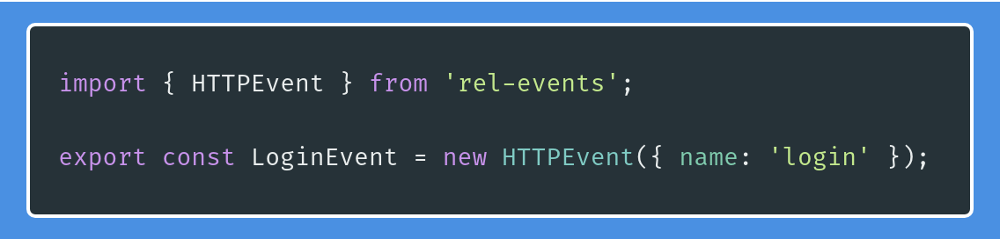

Mantendo o estado global de uma maneira sã com rel-events

for native english speakers, here's the translated post
Manter uma aplicação react grande e complexa não é um trabalho pra amadores. Não importa o que você escolher para lidar com a máquina de estados da aplicação, é quase certo de que é algo difícil de aprender, como redux, ou realmente complicado, como fazer uma camada de serviços na mão. Com o objetivo de fazer com que novas pessoas possam entrar fácil nos projetos, a galera da Labcodes decidiu que tava na hora de dar mais atenção e uma verdadeira solução pra esse tipo de problema. Nossa resposta foi criar a biblioteca rel-events.
Pra que mais uma biblioteca para gerenciar estado?

Sempre que eu penso em criar uma biblioteca nova, essa tirinha do xkcd vem me assombrar. Acreditem, eu não quero ser o tipo de pessoa que faz tudo por conta própria em vez de contribuir com algo que já existe, e esse é um dos problemas com essa mentalidade de forkar tudo. No entanto, eu sempre quis resolver um problema com o qual eu lido diariamente: usar uma biblioteca qualquer pra separar lógica de negócio/domínio dos meus componentes react.
Mas no fim do dia, depois de pensar muito, acabo me rendendo e rodando o clássico npm install redux react-redux --save. Eu até compartilhei algumas das ferramentas que eu uso com redux na nossa outra lib react-redux-api-tools.
Não ache que eu odeio o redux; pelo contrário, eu amo. Ele cumpre sua função, é ultra flexível, com poucos efeitos colaterais. Mas vamos ser sinceros: o desconforto quando lemos mapStateToProps pela primeira vez é real. Demorei um bom tempo pra entender o que tava acontecendo de verdade. E ainda tem actions, action creators, reducers, dispatches e middlewares, e sagas, e async dispatches; o aprendizado nunca acaba.
Depois dos primeiros confusos meses, lidar com o redux fica mais fácil (como quase tudo na vida), mas muito, muito mais verboso. Eu sempre pensei que o redux parecia uma biblioteca muito baixo nível e que eu sempre sou obrigado a especificar, passo a passo, exatamente e estritamente o que precisa ser feito. Zero abstração. E muita cópia e cola.
Cheguei à conclusão de que seria ótimo ter todas as features que gosto na minha configuração do redux - um fluxo para HTTP bem definido, menos repetição, conexão semântica entre actions e reducers -, sem sacrificar nada. Daí me deram a luz verde pra desenvolver internamente uma solução pra isso: rel-events.
Legal, mas o que raios é rel-events?
rel-events é uma biblioteca de eventos para react (React Events Library, por isso rel ;]). Ela leva o conceito de eventos, que já existe no redux, pra um nível mais alto de abstração. É uma camada fina por cima do redux que permite que você pare de pensar em actions, reducers, stores e middlewares, pra que você possa focar no que precisa ser feito, que é executar lógica de negócio de forma reativa quando eventos acontecem.
Pra isso, vou propor que a gente imagine um cenário bem comum: precisamos fazer com que um usuário faça login na nossa aplicação.
Nós poderíamos fazer todo o fluxo de requisições dentro dos próprios componentes, mas como dissemos no nosso outro post, nós não exatamente recomendamos esse caminho - sempre termina com código macarronado. Nós poderíamos usar redux, mas aí nossos devs juniors precisariam antes passar pela barreira do mapStateToProps, e às vezes nós não temos tempo de falar sobre absolutamente tudo de redux antes de entregar nossos projetos. Nós poderíamos usar sagas, mas aí o redux volta pra nos atazanar em dobro.
Então, vamos por uns minutos esquecer de actions e reducers e imaginemos um objeto chamado LoginEvent. Sempre que executamos algo sobre esse objeto passando email e senha, coisas acontecem e os dados corretos (de sucesso ou falha do login) são passados pros componentes. Imagine que você não precise saber nada sobre esse objeto, apenas seu nome. Sem reducers, sem actions, sem connect ou mapStateToProps. Seria algo mais ou menos assim:

Legal, mas onde colocaríamos todo seu comportamento? Onde tá o código que faz a requisição? Como lidar com casos de erro? Digamos que, além do objeto de evento, nós tenhamos algo que gerencia todo o fluxo do evento, que chamaríamos de Event Manager:
Melhor. Mas como esse manager tá implementado? Porque, se a gente precisa lidar com o fluxo inteiro dentro dele, ele precisa saber de muita coisa: como fazer a requisição, por exemplo, ou o que fazer com o estado global quando a requisição tiver sucesso ou falha. Ah, e seria bom ter um estado intermediário quando a requisição começa, porque a gente ama spinners de loading! Eita, esqueci que eu preciso de um estado inicial pra esse evento também, pra gente ter dados antes mesmo da requisição. Calma, calma, vamo lá:

É mais ou menos isso que a gente precisa, né? Mas então, como que a gente faria pra registrar quais Componentes que poderiam disparar esse Evento? Como que o Componente pegaria os dados desse evento? Tamo quase lá:
E essa é exatamente a API atual para um Evento HTTP (HTTPEvent) da lib rel-events. Nada de actions nem reducers, nada de acoplar as camadas de domínio com a de componentes, nada. Claro, a gente precisaria antes configurar como nossa lib se encaixa com o redux, mas geralmente é uma configuração de uma vez só, e muito bem documentada na nossa documentação (ainda só em inglês, com português em breve).
Isso parece... bom! Mas e as funcionalidades? Eu quero features!
Na nossa atual versão beta (0.1.3, de Setembro de 2019), você pode:
- usar um Evento (Event) básico (pras horas em que você não precisa fazer requisições);
- encadear um Event/HTTPEvent em outro (útil pra quando você quer buscar mais dados depois que um evento teve sucesso);
- ter múltiplos Events registrados para um mesmo Componente (porque você provavelmente vai ter um Componente que precisa ler dados de vários lugares);
- executár código depois das mudanças de estado de um Evento que foi disparado (usando
afterDispatch); - executár código depois das mudanças de estado de uma requisição que teve sucesso (usando
afterSuccess); - executár código depois das mudanças de estado de uma requisição que falhou (usando
afterFailure); - avaliar se um evento deve ser disparado ou não (com o método
shouldDispatchdo EventManager).
E muito mais! Tudo isso sem a carga cognitiva, sem as constantes aleatórias, sem os nomes de store manuais e toda a má experiência de desenvolvimento do redux. E a melhor parte: sem uma grande curva de aprendizado. Esse post tem basicamente tudo que você precisa saber pra usar nossa biblioteca no dia-a-dia. Mesmo. Eu sei, porque tô usando!
Então se você gostou, dá uma olhada no nosso repositório no github pra começar a usar e comparilhe o amor! Valeu pela atenção, e eu vejo vocês na próxima!